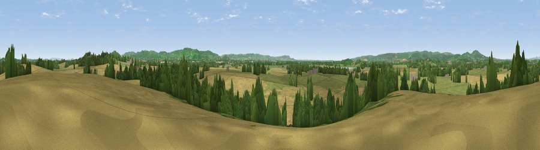

Viewpoint near Longney
#24728 in England · top 51% of its area beats it · near LongneyThe view, rendered

A 360° render of this exact spot computed from the terrain model, tree cover and land cover — summer colours, afternoon light, calibrated against photographs of famous viewpoints. Real trees, hedges and buildings will differ in detail.
The panorama
Grey silhouette: terrain skyline in each direction (720 bearings, Earth curvature and refraction included). Dashed green: skyline with trees (+15 m) and buildings (+8 m) as obstacles. Blue strip: how far the ground is visible on each bearing.
Where the view opens
Wedge length = distance to the farthest visible ground on that bearing (vegetation-aware). Rings at 10, 25 and 50 km.
What fills the view
45% cropland · 39% grassland · 14% woodland · 1% built-up ·
Angular shares of the visible panorama (visual magnitude), not map area. Landscape diversity 0.48 (0–1 Shannon).
Key numbers
More beautiful places nearby
The staircase of upgrades: each row has a higher view potential than everything closer. Driving times are estimates from straight-line distance, calibrated against real road routing — check an actual route before setting out.
| Place | Direction | Drive | Score |
|---|---|---|---|
| Hockley Hill | ENE · 2 km | ~4 min | 58.1 |
| Barrow Hill | SW · 5 km | ~11 min | 65.7 |
| Haresfield Beacon | SE · 7 km | ~14 min | 75.7 |
| Viewpoint near Whaddon | ENE · 7 km | ~15 min | 77.7 |
| Viewpoint near Brookthorpe | E · 9 km | ~17 min | 78.0 |
| Painswick Beacon | E · 10 km | ~19 min | 79.6 |
| Viewpoint near Great Witcombe | E · 12 km | ~23 min | 80.5 |
| Chase End Hill | N · 22 km | ~37 min | 81.5 |
51.81762, -2.33543 · source: screening · position refined by local search. Computed location — check access rights before visiting.